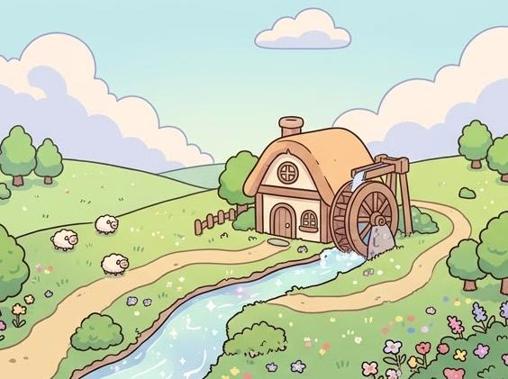
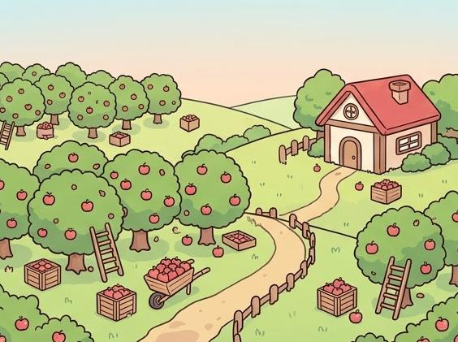
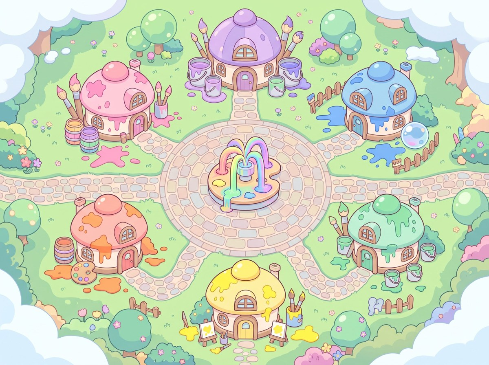
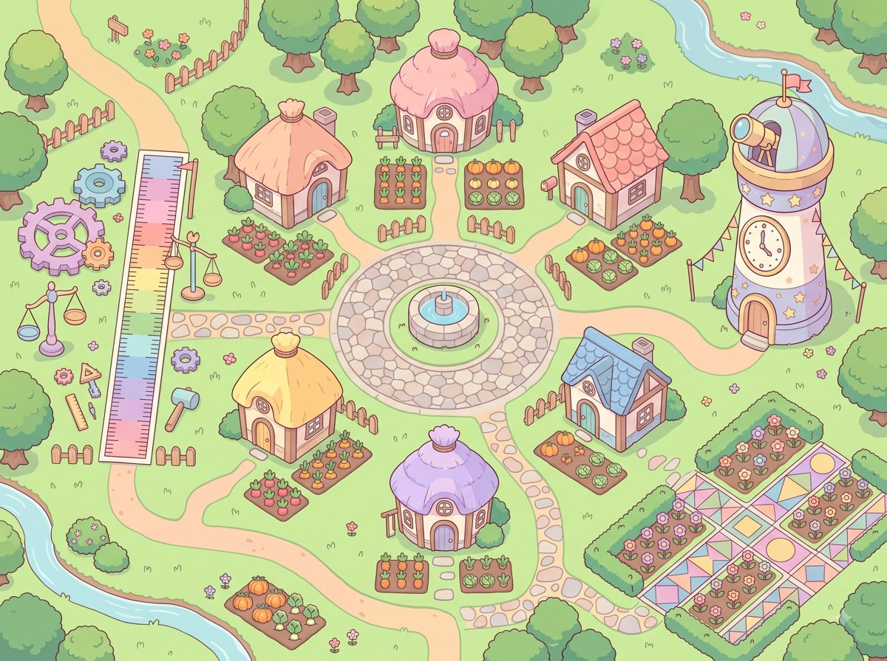

오늘의 수학은,
어느 마을에서?
학년을 고르면 교과서 단원마다 다른 장소가 열립니다. 학생은 주민이 되어 문제를 풀고, 별과 씨앗으로 마을을 가꿉니다. 설치도 가입도 없이 주소 하나로 시작하세요.
- 6개 학년
- 2개 학기
- 기기 내 저장
- 교실용 링크
학년을 누르면 오늘의 수업 계획이 바뀝니다.
오늘의 수업 목록
오늘의 수업 계획
- 곱셈 방앗간곱셈
- 나눔 과일정거장나눗셈
- 동그라미 시계소원
- 조각 피자부엌분수
- 되와 무게 실험실들이와 무게
- 그림소식 우체통자료의 정리
선생님 메모 · 3학년 2학기는 곱셈 방앗간에서 시작해요.
같은 마을 생활, 학년마다 다른 질문
집 꾸미기, 농사, 산책은 전 학년이 함께하고, 단원 장소 안 질문만 학년에 맞춰 바뀝니다. 아래 사진은 실제 마을 화면입니다.




문제는 보기만 하지 않습니다
분수 칸을 눌러 색칠하고, 원의 반지름을 조절하고, 비커에 물을 부으며 답을 찾습니다. 문제 옆에는 손글씨 연습장과 단계별 힌트가 있습니다.

누르는 그림 교구
묶음 세기, 바구니 나누기, 분수 색칠, 그림그래프 도장을 손으로 조작합니다.
손글씨 연습장
검정·빨강·파랑 펜과 지우개로 식을 쓰며 생각합니다. 적은 내용은 채점하지 않습니다.
단계별 힌트
필요할 때 한 단계씩 펼쳐 봅니다. 해설은 교과서 순서대로 차근차근 보여 줍니다.
1·2학년은 그림으로, 3~6학년은 마을을 걸으며
같은 별숲이지만 입구의 방식이 다릅니다. 1·2학년은 큰 그림과 큰 단추로, 3~6학년은 단원 장소를 걸으며 시작합니다.

- 큰 그림과 큰 단추로 시작합니다.
- 한 번에 푸는 양을 적게 잡고 자주 멈춥니다.
- 배움이 쌓이면 단원 장소가 조금씩 달라집니다.
- 학년마다 단원 장소 6곳을 돕니다.
- 그림 교구와 손글씨 연습장으로 풉니다.
- 별과 씨앗으로 마을을 가꿉니다.
배운 만큼 마을이 조금씩 자랍니다
차시를 끝내면 별과 씨앗을 받고, 심고 거두며 마을을 가꿉니다. 놀이는 학습 시간을 밀어내지 않는 선에서 열립니다.
오늘의 도전
끝낸 차시에서 하루 몇 문제를 뽑아 풉니다. 감점은 없습니다.
장터 시세
요일별 값이 바뀌는 장터에서 그래프, 평균, 단위량으로 비교합니다.
부탁 들어주기
길이와 무게 조건에 맞는 물고기와 곤충을 찾아 부탁을 들어줍니다.
교실에서 쓰기 전에 확인할 점
가입도 설치도 없습니다. 학생 기록은 이 브라우저에만 저장되고, 학년별 주소 하나를 학생에게 건네면 바로 시작합니다.
가입 없음
학생은 주소를 열면 바로 시작합니다. 이름과 기록은 그 기기에만 남습니다.
기기 내 저장
기록은 이 브라우저에만 저장됩니다. 기기를 바꾸면 이어지지 않습니다.
6개 학년 · 2개 학기
학년마다 단원 장소와 질문이 다릅니다. 2~8월은 1학기, 9~1월은 2학기를 먼저 보여 줍니다.
브라우저에서 바로
PC·태블릿·휴대폰 브라우저에서 설치 없이 엽니다. 홈 화면에 추가하면 오프라인에서도 열립니다.